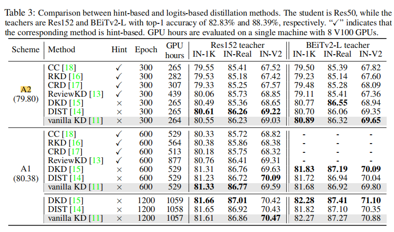
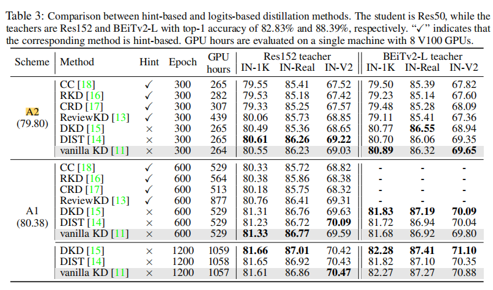
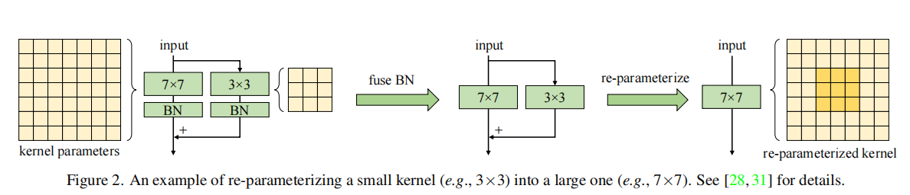
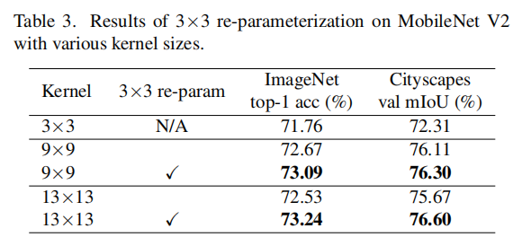

重参数化与蒸馏
迁移学习
迁移学习(Transfer Learning)是机器学习中的一种技术,它利用已有的知识来帮助学习新的任务。迁移学习的基本思想是,对于学习任务T,如果有相关的源任务S,那么T任务可以利用S任务中学习到的知识来提高学习效率和性能。 迁移学习的主要方法有: 1. 特征提取(Feature extraction): 使用源任务S中预训练的模型来提取特征,然后使用提取的特征来训练目标任务T的模型。这种方法假设源任务S学习到的特征表达也适用于目标任务T。 2. 精调(Fine-tuning): 使用源任务S中预训练的模型,然后在目标任务T上继续训练。这种方法会进一步调整源模型中学到的表示来适应目标任务。 3. 迁移学习的主要步骤: (1) 选取源任务S和目标任务T,S和T具有一定相关性。 (2) 在源任务S上预训练模型(如神经网络),得到源模型。 (3) 利用源模型来初始化目标任务T的模型。 (4) 在目标任务T上训练目标模型。可以只训练高层参数(特征提取)或整个模型(精调)。 (5) 在目标任务T上测试目标模型。
知识蒸馏
知识蒸馏的开山之作
Hinton, Geoffrey, Oriol Vinyals, and Jeff Dean. "Distilling the knowledge in a neural network."arXiv preprint arXiv:1503.02531(2015). 文章的标题是Distilling the Knowledge in a Neural Network，作者认为模型的参数保留了模型学到的知识，在这篇论文中，作者认为可以将模型看成是黑盒子，知识可以看成是输入到输出的映射关系。因此，我们可以先训练好一个teacher网络，然后将teacher的网络的输出结果。作为student网络的目标，训练student网络，使得student网络的结果尽可能接近teacher，因此，我们可以将损失函数写成:
但是，直接使用teacher网络的softmax的输出结果 ，可能不大合适。因此，一个网络训练好之后，对于正确的答案会有一个很高的置信度。这样的话，teacher网络学到数据的相似信息（例如数字2和3，7很类似）很难传达给student网络。因此，文章提出了softmax-T(软标签计算公式)，公式如下所示： $$ q_{i} = \frac{exp(z_{i}/T)}{\Sigma_{j} exp(z_{j}/T)} $$ 这里的\(q_{i}\)是student网络的学习对象，\(z_{i}\)是神经网络softmax前的输出logit，如果T取1，这个公式就是softmax，根据logit输出各个类别的概率。如果T接近于0，则最大的值会越近1，其它值会接近0，近似于onehot编码。
写成更一般的形式
\(p^{s}\)和\(p^{t}\)是学生和老师的logistic function的结果，\(y\)是独热的ground truth. \(D_{cls}\) 和 \(D_{kd}\)是分类loss（例如交叉熵）和蒸馏loss(KL散度)。 另外一些方法也监督了中间特征
\(T_{s}\)和\(T_{t}\) 是对齐两个模块特征的变换
在此基础上，各式各样的蒸馏工作涌现出来，并对各个细分任务产生影响。最近的一些工作指出，在大数据集上各种复杂的蒸馏结构可能并没有太大的性能增益
Zhiwei Hao, Jianyuan Guo, Kai Han, Han Hu, Chang Xu, Yunhe Wang: VanillaKD: Revisit the Power of Vanilla Knowledge Distillation from Small Scale to Large Scale. CoRR abs/2305.15781 (2023)
在大数据集训练的大型模型的巨大成功表明，规模是获得优越结果的关键因素。因此，据集的有限容量架构，设计知识蒸馏（KD）方法的合理性，现在被认为是非常必要的。 ImageNet-1K等大规模数据集上的能力被低估。作者探索了使用更强的数据增强技术和使用更大的数据集可以直接减少KD和其他精心设计的KD变体之间的差距。这突出了在实际场景中设计和评估KD方法的必要性，从而摆脱了小规模数据集的局限性。通过对KD及其在更复杂方案中的变体进行了研究，包括更强的训练策略和不同的模型能力的研究表明，普通的KD在大规模数据集上可以取得非常好的性能。
 

重参数化
一些重参数化工作指出，在使用大卷积核的时候，利用重参数化加上并行的小卷积核可以帮助提升训练的稳定性，并更好的收敛。
 